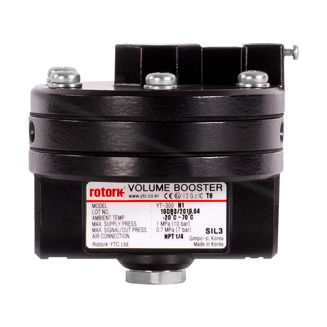

YTC là thương hiệu positioner và phụ kiện khí nén thuộc danh mục Rotork, gồm nhiều nhóm sản phẩm với vai trò khác nhau trong vòng điều khiển valve/actuator khí nén: positioner, air filter regulator, volume booster, lock-up valve và snap acting relay. Bài viết là bản đồ tổng quan giúp phân biệt vai trò từng nhóm và các họ model chính theo trang sản phẩm hiện hành của Rotork, trước khi đi vào thông số kỹ thuật chi tiết của từng model cụ thể.

Trả lời nhanh
- Positioner: điều khiển vị trí actuator theo tín hiệu — các họ chính YT-1000/1050, YT-1200, YT-2500/2501/2600, YT-3100, YT-3300/3301/3302/3303/3350, YT-3400/3450, YT-3700/3702/3750, và smart positioner RTP-4400/TMP-3000.
- Air filter regulator: lọc và điều áp khí nén đầu vào — họ YT-200/205/220/225.
- Volume booster: khuếch đại lưu lượng khí để tăng tốc actuator — họ YT-300/305/310/315/320/325.
- Lock-up valve: giữ áp suất trong buồng actuator khi mất tín hiệu/nguồn khí — họ YT-400/405/430/435.
- Snap acting relay: chuyển mạch tín hiệu khí nhanh — họ YT-520/525/530/535.
Bản đồ vai trò các nhóm sản phẩm YTC
| Nhóm | Vai trò trong vòng điều khiển | Họ model chính |
|---|---|---|
| Positioner | Nhận tín hiệu điều khiển, điều chỉnh áp suất khí cấp cho actuator để đạt đúng vị trí van | YT-1000/1050 (electro-pneumatic), YT-1200 (pneumatic-pneumatic), YT-2500/2501/2600 (piezo, có truyền thông), YT-3100 (compact smart), YT-3300/3301/3302/3303/3350/3400/3450/3700/3702/3750 (torque motor, có truyền thông), RTP-4400 và TMP-3000 (smart positioner) |
| Air filter regulator | Lọc tạp chất và điều áp khí nén nguồn trước khi vào hệ thống positioner/actuator | YT-200, YT-205, YT-220, YT-225 |
| Volume booster | Khuếch đại lưu lượng khí giữa positioner và actuator để tăng tốc độ đóng/mở | YT-300, YT-305, YT-310, YT-315, YT-320, YT-325 |
| Lock-up valve | Giữ nguyên áp suất khí trong buồng actuator khi mất tín hiệu điều khiển hoặc nguồn khí (fail-in-place) | YT-400, YT-405, YT-430, YT-435 |
| Snap acting relay | Chuyển mạch tín hiệu khí nhanh cho ứng dụng on/off hoặc logic điều khiển khí nén | YT-520, YT-525, YT-530, YT-535 |
Cách tiếp cận khi chọn positioner và phụ kiện
- Xác định vai trò cần bổ sung: nếu hệ thống khí nén chưa sạch/ổn định áp, cần air filter regulator; nếu cần tăng tốc độ vận hành actuator, cần volume booster; nếu cần giữ vị trí khi mất tín hiệu, cần lock-up valve.
- Chọn công nghệ positioner: electro-pneumatic cơ bản (YT-1000/1050), pneumatic-pneumatic (YT-1200), hoặc smart positioner có truyền thông (YT-2500/2600, YT-3300 series, YT-3400/3450, YT-3700 series, RTP-4400, TMP-3000) tùy yêu cầu độ chính xác và giám sát từ xa.
- Xác nhận chứng nhận khu vực nguy hiểm: mỗi họ model có certificate riêng (ATEX/IECEx/FM/CSA/UKEX/PESO) — không suy đoán chứng nhận của một model sang model khác trong cùng họ.
- Đối chiếu thông số kỹ thuật theo manual/datasheet của đúng model (dải tín hiệu, áp suất cấp, kích thước kết nối) trước khi chốt cấu hình — không suy từ tên gọi hoặc từ model tương tự.
Model và range liên quan
| Model/range | Lý do liên quan | Trang sản phẩm |
|---|---|---|
| Valve Positioners (YT-1000 đến YT-3750, RTP-4400, TMP-3000) | Nhóm positioner chính | Valve positioners and controllers |
| YTC Valve Positioner Accessories | Air filter regulator, volume booster, lock-up valve, snap acting relay | Valve positioners and controllers |
| GP/GH, RC200 | Actuator khí nén thường lắp cùng positioner/phụ kiện YTC | Actuator khí nén Rotork: GP/GH hay RC200 |
Mua positioner và phụ kiện YTC chính hãng tại Việt Nam
Fast Group Engineering là đơn vị cung cấp sản phẩm Rotork chính hãng tại Việt Nam, đầy đủ giấy tờ CO/CQ, catalogue và datasheet theo từng lô hàng. Đội ngũ kỹ thuật hỗ trợ đối chiếu positioner và phụ kiện YTC theo actuator, tín hiệu điều khiển và chứng nhận khu vực trước khi báo giá.
Câu hỏi thường gặp
YTC positioner dùng để làm gì?
Positioner nhận tín hiệu điều khiển (thường 4-20 mA) và điều chỉnh áp suất khí nén cấp cho actuator để đưa van tới đúng vị trí mong muốn, đóng vai trò trung tâm trong vòng điều khiển valve/actuator khí nén.
Air filter regulator (YT-200 series) khác gì volume booster (YT-300 series)?
Air filter regulator (YT-200/205/220/225) lọc và điều áp khí nén cấp vào hệ thống trước positioner. Volume booster (YT-300/305/310/315/320/325) khuếch đại lưu lượng khí để tăng tốc độ đóng/mở actuator, đặt sau positioner trên đường tín hiệu khí tới actuator. Hai nhóm có vai trò khác nhau và thường dùng cùng nhau, không thay thế nhau.
Lock-up valve (YT-400 series) dùng khi nào?
Lock-up valve giữ nguyên áp suất khí trong buồng actuator khi mất tín hiệu điều khiển hoặc nguồn khí, giúp van duy trì vị trí hiện tại (fail-in-place) thay vì di chuyển không kiểm soát — thường dùng trong ứng dụng cần an toàn khi mất tín hiệu.
Nên chọn positioner nào giữa dòng YT-1000, YT-2500 và YT-3300?
Đây là các họ positioner khác công nghệ: YT-1000/1050 dùng công nghệ điện-khí (electro-pneumatic) cơ bản, YT-2500/2501/2600 dùng công nghệ piezo có truyền thông, YT-3300/3301/3302/3303/3350/3400 dùng công nghệ torque motor có truyền thông. Lựa chọn cụ thể cần dựa trên yêu cầu độ chính xác, giao tiếp (HART, truyền thông số) và chứng nhận khu vực nguy hiểm — nên đối chiếu manual/datasheet của model trước khi chốt.
Cần gửi thông tin gì để chọn đúng positioner và phụ kiện YTC?
Gửi loại actuator (pneumatic rotary/linear), tín hiệu điều khiển, có cần volume booster/lock-up valve hay không, chứng nhận khu vực nguy hiểm cần thiết và yêu cầu truyền thông (HART, digital) cho Fast Group Engineering để đối chiếu trước khi báo giá.
Gửi yêu cầu hệ thống để chọn đúng positioner/phụ kiện YTC
Để kiểm tra đúng mã, vui lòng gửi loại actuator, tín hiệu điều khiển, yêu cầu chứng nhận và truyền thông cho Fast Group Engineering qua Zalo/điện thoại (+84) 938 888 958 hoặc email minhduc@fastgroup.vn.
Nguồn tham khảo
- rotork.com/en/products/valve-positioners-and-controllers/valve-positioners — truy cập 19/07/2026 (danh sách họ positioner YT-1000 đến YT-3750, RTP-4400, TMP-3000).
- rotork.com/en/products/valve-positioners-and-controllers/ytc-valve-positioner-accessories — truy cập 19/07/2026 (danh sách air filter regulator YT-200 series, volume booster YT-300 series, lock-up valve YT-400 series, snap acting relay YT-520 series).
Ghi chú nội bộ: bài này chỉ là bản đồ vai trò/nhóm sản phẩm, không đưa thông số kỹ thuật (áp suất, lưu lượng, độ chính xác) của từng model cụ thể — đúng theo yêu cầu brief là phải dùng manual/datasheet riêng của từng model khi đưa số liệu. Reviewer cần mở manual tương ứng (ví dụ PUB126-097 cho YT-200/205/220/225, PUB126-100 cho YT-300/305/310/315/320/325) nếu cần viết bài chi tiết hơn theo từng model.